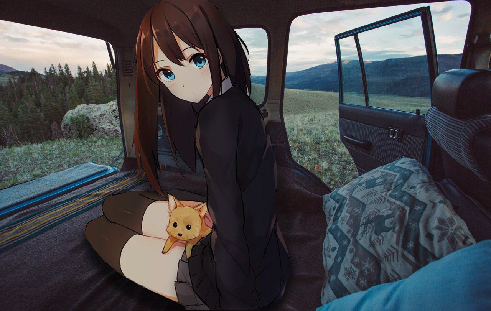

I am making this because of the Learn Enough To be Dangerous Tutorial
So this is the start of my blog... So yeah. I dont really know why im making this, or for what purpose, and what I will put in it, and I always thought a blog was a girly thing... But hey, it is pretty weird , so far, right? :p
I like this image, I think it is very pretty and I wish I could be in such a scene in real life. even though the hill they are on reminds me of my home, it is such an impossible scene.(mainly due to the fact that the woman is 2d) but still I wish I could be there, it is nice to dream, isn't it?
I hope to add some CSS to this little project of mine and make it really pretty.